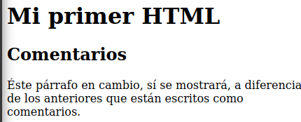
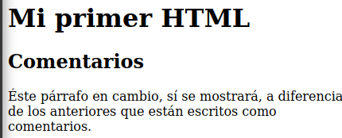

4. Tu primer "body" en HTML
El "body" es la parte que los navegadores muestran cuando
el usuario accede a nuestra página.
1 <!DOCTYPE html>
2 <html lang="es">
3 <head>
4 </head>
5 <body>
6 </body>
7 </html>
Esta es la parte más extensa de nuestro documento html.
En esta sesión estudiaremos los elementos mas frencuentes del "body".
1. "Headings" ("<h1></h1>")
Los encabezados definen el título y subtítulos de la información en tu página.
Para crear un "heading" escribimos texto entre cualquiera de los
siguientes tags
<h1></h1>
<h2></h2>
<h3></h3>
<h4></h4>
<h5></h5>
<h6></h6>
El número de los "headings" indica su nivel de importancia y son empleados
no solo por los usuarios sino también por los motores de búsqueda.
Los buscadores indexan las páginas empleando la estructura
que proveen los headings. Un "h1" indica que el texto contenido es un
encabezado principal, mientras que un "h2" señala que es un encabezado de
menor importancia que el anterior y así consecuentemente.
Los "headings" modifican el grosor del texto y su tamaño para comunicar
su importancia. Un "h4" será mucho más pequeño que un "h1". Debes cuidar
de no usar los "headings" sólo para formatear tu texto, sino principalmente
para definir la estructura del documento o sección que presentas.
A continuación te mostraré el código de un par de headings y luego su
presentación en el navegador web.


2. Párrafos
Los párrafos representan bloques de texto con un formato
definido. Creamos párrafos escribiendo texto entre los
siguientes tags
<p></p>
Cada vez que comiences un nuevo párrafo, el navegador lo diferenciará
del anterior empleando un formateado predeterminado o el que asignes luego.
A continuación te mostraré el código de algunos párrafos y luego su
representación en el navegador web.

3. Listas
Las listas organizan elementos relacionados dentro de un índice.
Hay tres tipos de listas en html:
- Listas ordenadas.
- Listas no ordenadas.
- Listas de descripción.
La lista que acabas de leer fue escrita dentro del código
de html para listas.
A continuación te mostraré el código de algunas listas y luego su representación en el
navegador.

4. Comentarios
Los comentarios permiten te escribir texto dentro del documento
sin que éste se muestre en el navegador.
Los comentarios te permiten escribir recordatorios de aspectos importantes
del documento o aclaratorias para otros desarrolladores
que trabajen con tu documento.
A continuación te mostraré el código de un comentario y la manera en la que
éste oculta el texto que contiene.
 

5. Links
Empleamos "links" para desplazarnos entre las páginas de
un sitio web, para enviar correos, e incluso desplazarnos entre las secciones de una
página.
El código para escribir un link es éste:
<a href=" ... "></a>
Puedes encerrar otros tags dentro del tag de "link". Esto te permite
utilizar texto, imágenes, formas e incluso botones como "links".
De igual manera puedes escribir solo texto dentro del tag de "link".
Esto hará que se muestre el texto en el formato predeterminado para
los hipervínculos, o en el formatos que definas luego.
A continuación te mostraré el código para crear algunos links
y luego la manera en la que muestran en el navegador.


5. Links
Empleamos "links" para desplazarnos entre las páginas de
un sitio web, para enviar correos, e incluso desplazarnos entre las secciones de una
página.
El código para escribir un link es éste:
<a href=" ... "></a>
Puedes encerrar otros tags dentro del tag de "link". Esto te permite
utilizar texto, imágenes, formas e incluso botones como "links".
De igual manera puedes escribir solo texto dentro del tag de "link".
Esto hará que se muestre el texto en el formato predeterminado para
los hipervínculos, o en el formatos que definas luego.
A continuación te mostraré el código para crear algunos links
y luego la manera en la que muestran en el navegador.
Concluyendo